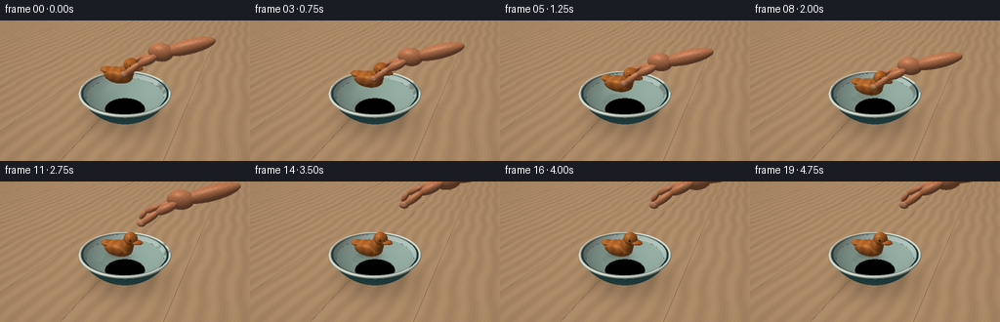
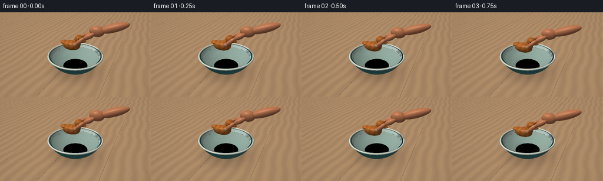
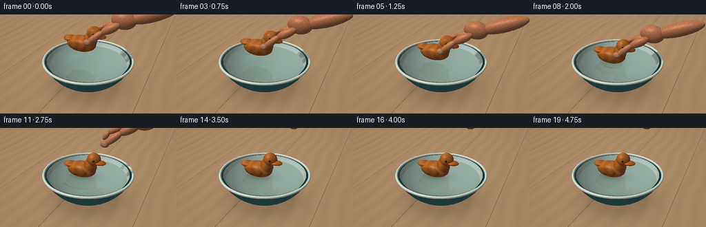
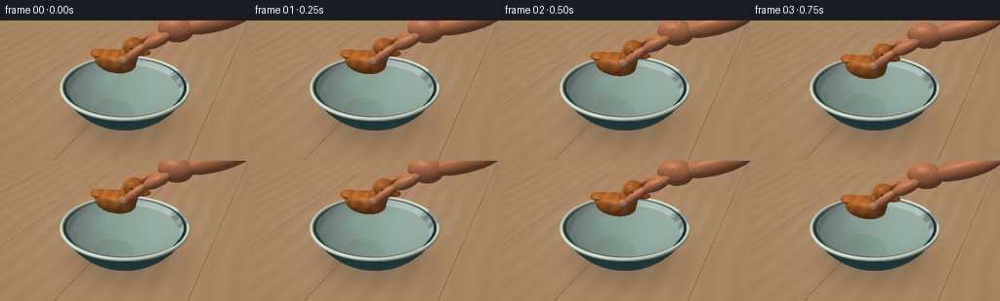

CODING AGENTS AS PIXEL WORLD MODELS
traex/GPT-6.1-Sol · mechanics_0010
点击播放 · 原生 RGB 像素
逐轮保存的候选
回放视频、检查图与代码变化。
每份候选均可单独播放。实际图片检查记录在下方工具轨迹中。
候选 01播放与检查图
点击播放 · 原生 RGB 像素


展开代码变化
--- 上一保存版本
+++ 本次保存版本
@@ -0,0 +1,295 @@
+"""Procedural, antialiased RGB renderer for the requested water-placement scene."""
+from pathlib import Path
+import json
+import numpy as np
+from PIL import Image
+import artifact_io
+
+ROOT=Path(__file__).resolve().parent
+SPEC=json.loads((ROOT/'task_spec.json').read_text())
+W,H=SPEC['width']*2,SPEC['height']*2
+rng=np.random.default_rng(12)
+
+def unit(v):
+ return v/(np.linalg.norm(v,axis=-1,keepdims=True)+1e-15)
+
+def ell(center,radii,mat=2,rotation=None):
+ R=np.eye(3) if rotation is None else rotation
+ return {'c':np.array(center,float),'r':np.array(radii,float),'R':R,'mat':mat}
+
+def segment(a,b,r,mat=3):
+ a,b=np.array(a,float),np.array(b,float)
+ axis=unit(b-a); side=unit(np.cross(axis,[0,1,0])); other=np.cross(axis,side)
+ return ell((a+b)/2,[r,r,np.linalg.norm(b-a)/2+r*.5],mat,np.stack([side,other,axis],axis=1))
+
+def intersect_e(O,D,e):
+ A=((O-e['c'])@e['R'])/e['r']
+ B=(D@e['R'])/e['r']
+ aa=np.sum(B*B,axis=-1); bb=np.sum(A*B,axis=-1); cc=np.sum(A*A,axis=-1)-1
+ disc=bb*bb-aa*cc
+ root=np.sqrt(np.maximum(disc,0))
+ t=(-bb-root)/aa
+ t=np.where(t>1e-4,t,(-bb+root)/aa)
+ return np.where((disc>=0)&(t>1e-4),t,np.inf)
+
+def sphere_clip(O,D,r,zc,zlo,zhi,inner=False):
+ C=np.array([0,0,zc]); A=O-C
+ bb=np.sum(A*D,axis=-1); cc=np.sum(A*A,axis=-1)-r*r
+ dis=bb*bb-cc; root=np.sqrt(np.maximum(dis,0))
+ a=-bb-root; b=-bb+root
+ za=O[...,2]+a*D[...,2]; zb=O[...,2]+b*D[...,2]
+ a=np.where((dis>=0)&(a>1e-4)&(za>=zlo)&(za<=zhi),a,np.inf)
+ b=np.where((dis>=0)&(b>1e-4)&(zb>=zlo)&(zb<=zhi),b,np.inf)
+ t=np.minimum(a,b)
+ return t
+
+camera=np.array([3.15,-6.7,5.15]); target=np.array([0,0,1.02])
+forward=unit(target-camera); right=unit(np.cross(forward,[0,0,1])); up=np.cross(right,forward)
+y,x=np.mgrid[0:H,0:W]
+xx=(x+.5-W/2)/W; yy=-(y+.5-H/2)/W
+D=unit(forward+xx[...,None]*right*1.10+yy[...,None]*up*1.10).reshape(-1,3)
+O=np.broadcast_to(camera,D.shape)
+LIGHT=unit(np.array([-3.,-4.,7.]))
+
+# Stable micro-textures are evaluated in world coordinates, not per-frame noise.
+def wood(P,duck=False):
+ if duck:
+ q=P[...,0]*20 + 1.2*np.sin(P[...,2]*10)+.45*np.sin(P[...,1]*19)
+ growth=np.sin(q+1.6*np.sin(P[...,2]*3.1))
+ fine=np.sin(q*5.5+np.sin(P[...,2]*17))*np.sin(q*.31+2)
+ base=np.array([.67,.365,.139])
+ color=base+(growth*.037+fine*.014)[...,None]*np.array([1,.7,.4])
+ else:
+ q=P[...,0]*10+.9*np.sin(P[...,1]*1.6)+.16*np.sin(P[...,1]*5.0)
+ growth=np.sin(q)+.25*np.sin(q*6)
+ pores=np.sin(P[...,0]*125+2*np.sin(P[...,1]*3))*np.sin(P[...,1]*16)
+ base=np.array([.68,.535,.39])
+ color=base+(growth*.028+pores*.009)[...,None]*np.array([1,.83,.58])
+ seam=np.abs((P[...,0]+2.1)%2.8-1.4)
+ color*=np.where(seam<.009,.69,1)[...,None]
+ return color
+
+def toy(z,angle=0):
+ ca,sa=np.cos(angle),np.sin(angle)
+ R=np.array([[ca,-sa,0],[sa,ca,0],[0,0,1]])
+ c=np.array([-.16,-.02,z])
+ def E(p,r,m=2,rot=None):
+ RR=R if rot is None else R@rot
+ return ell(c+np.array(p)@R.T,r,m,RR)
+ # A single honey-colored carved duck, with a curved neck and tapered tail.
+ shapes=[E([-.11,0,0],[.57,.335,.29]),
+ E([.26,0,.20],[.235,.245,.34]),
+ E([.39,-.005,.49],[.255,.236,.242]),
+ E([.60,-.035,.415],[.26,.17,.071],5),
+ E([-.54,0,.135],[.28,.21,.105]),
+ E([-.15,-.292,.045],[.365,.057,.155],6),
+ E([-.15,.292,.045],[.365,.057,.155],6),
+ E([.462,-.225,.527],[.034,.018,.036],4),
+ E([.462,.225,.527],[.034,.018,.036],4),
+ E([.459,-.242,.541],[.009,.005,.009],7)]
+ return shapes
+
+def hand(z,release):
+ # Thumb and bent index finger gently grip the back, wrist extending off screen.
+ shift=np.array([release*.95,release*.13,release*1.65])
+ def p(x,y,dz):return np.array([x,y,z+dz])+shift
+ s=[]
+ palm=p(1.16,.30,.98)
+ s.append(ell(palm,[.43,.265,.31],3))
+ s.append(segment(p(1.35,.36,1.00),p(2.65,.53,1.48),.24,3))
+ # Far index bends down to the upper back of the duck.
+ s+= [segment(p(.98,.21,.86),p(.48,.22,.69),.116),
+ segment(p(.48,.22,.69),p(.05,.24,.45),.102),
+ segment(p(.05,.24,.45),p(-.12,.205,.21),.091)]
+ # Near thumb forms the visible opposing pinch.
+ s+= [segment(p(1.06,.03,.88),p(.59,-.12,.62),.153),
+ segment(p(.59,-.12,.62),p(.16,-.31,.25),.122),
+ ell(p(.12,-.31,.23),[.151,.118,.108],3)]
+ # Oval thumbnail, flush with the tip, subtle ivory-pink.
+ s.append(ell(p(.13,-.416,.263),[.09,.016,.072],8))
+ # Middle and ring fingers folded behind the index, visible at wrist.
+ s+= [segment(p(1.01,.47,.9),p(.63,.45,.70),.12),
+ segment(p(.63,.45,.70),p(.49,.37,.52),.11),
+ segment(p(1.09,.59,.88),p(.84,.57,.65),.108),
+ segment(p(.84,.57,.65),p(.68,.48,.52),.10)]
+ return s
+
+def background(d):
+ # Soft warm studio/window environment.
+ sky=np.clip(d[...,2]*.6+.5,0,1)
+ col=np.array([.73,.755,.70])[None,:]*(.75+.25*sky[...,None])
+ win=np.exp(-((d[...,0]+.45)/.38)**6-((d[...,1]+.60)/.42)**6)
+ col+=win[...,None]*.17
+ return col
+
+def trace(O,D,shapes,water=True,only_toy=False):
+ count=len(D)
+ ts=np.full(count,np.inf); ids=np.full(count,-1,int); ns=np.zeros((count,3))
+ if not only_toy:
+ # Warm oak tabletop.
+ t=-O[:,2]/D[:,2]
+ valid=(t>0)&(D[:,2]<-.00001)
+ ts=np.where(valid,t,ts); ids[valid]=0; ns[valid]=[0,0,1]
+ # Ceramic outer shell and smooth concave basin.
+ for rr,zc,lo,hi,rev,mi in [(1.78,1.70,.13,1.035,False,1),(1.68,1.72,.23,1.035,True,9)]:
+ t=sphere_clip(O,D,rr,zc,lo,hi)
+ m=t<ts; p=O[m]+D[m]*t[m,None]
+ ns[m]=unit(p-np.array([0,0,zc]))*(-1 if rev else 1)
+ ts[m]=t[m];ids[m]=mi
+ # Thin, rounded lip rendered as a miniature ellipse-swept torus via analytic marching.
+ # Conservative sphere-tracing needs only the rays around the upper annulus.
+ tr=(1.035-O[:,2])/D[:,2]
+ pr=O+D*tr[:,None]; rad=np.linalg.norm(pr[:,:2],axis=1)
+ cand=np.flatnonzero((rad>1.55)&(rad<1.77)&(tr>0))
+ if len(cand):
+ o=O[cand]; d=D[cand]; t0=np.maximum(tr[cand]-.32,0)
+ for _ in range(24):
+ p=o+d*t0[:,None]; rho=np.linalg.norm(p[:,:2],axis=1)
+ sdf=np.sqrt((rho-1.651)**2+(p[:,2]-1.033)**2)-.045
+ t0+=np.maximum(sdf,.00008)
+ p=o+d*t0[:,None];rho=np.linalg.norm(p[:,:2],axis=1)
+ sdf=np.sqrt((rho-1.651)**2+(p[:,2]-1.033)**2)-.045
+ valid=(sdf<.001)&(t0<ts[cand])
+ inds=cand[valid]; pp=p[valid]; rh=rho[valid]
+ nor=pp.copy();nor[:,:2]*=((rh-1.651)/(rh+1e-15))[:,None];nor[:,2]-=1.033
+ ns[inds]=unit(nor);ts[inds]=t0[valid];ids[inds]=10
+ if water:
+ t=(.865-O[:,2])/D[:,2];p=O+D*t[:,None]
+ m=(t>1e-4)&(t<ts)&(np.sum(p[:,:2]**2,axis=1)<(1.68**2-(1.72-.865)**2))
+ ts[m]=t[m];ids[m]=11;ns[m]=[0,0,1]
+ for j,e in enumerate(shapes):
+ t=intersect_e(O,D,e);m=t<ts
+ if not np.any(m):continue
+ pp=O[m]+D[m]*t[m,None]
+ norm=((pp-e['c'])@e['R'])/(e['r']**2)
+ ns[m]=unit(norm@e['R'].T)
+ ts[m]=t[m];ids[m]=20+j
+ return ts,ids,ns
+
+def render(index):
+ t=index/SPEC['fps']
+ # First two seconds: eased lowering, then release and natural bobbing.
+ u=np.clip(t/1.95,0,1); ease=u*u*(3-2*u)
+ z=1.62-.495*ease
+ contact=max(0,t-1.85)
+ if t>1.95:z=1.125+.015*np.sin((t-1.95)*5)*np.exp(-(t-1.95)*1.1)
+ angle=.025*np.sin(max(0,t-1.95)*2)*min(contact,1)
+ duck=toy(z,angle)
+ release=np.clip((t-2.12)/1.1,0,1);release=release*release*(3-2*release)
+ shapes=duck+hand(z,release)
+ ts,ids,N=trace(O,D,shapes)
+ hit=ids>=0
+ P=O+D*np.where(hit,ts,0)[:,None]
+ colors=background(D)
+ albedo=np.zeros_like(colors)
+ albedo[ids==0]=wood(P[ids==0])
+ albedo[ids==1]=[.20,.43,.445]
+ albedo[ids==9]=[.71,.79,.755]
+ albedo[ids==10]=[.80,.84,.775]
+ rough=np.full(len(D),.3); rough[ids==0]=.65
+ for j,e in enumerate(shapes):
+ mask=ids==20+j;p=P[mask];mat=e['mat']
+ if mat in [2,5,6]:
+ local=(p-e['c'])@e['R']
+ albedo[mask]=wood(p,True)
+ if mat==5:albedo[mask]*=np.array([.99,.90,.79])
+ if mat==6:albedo[mask]*=.94
+ rough[mask]=.30
+ elif mat==3:
+ tone=.016*np.sin(p[:,0]*39)*np.sin(p[:,2]*42)
+ albedo[mask]=np.array([.72,.438,.287])+tone[:,None]
+ rough[mask]=.57
+ elif mat==4:albedo[mask]=[.048,.032,.018];rough[mask]=.17
+ elif mat==7:albedo[mask]=[.92,.83,.66]
+ elif mat==8:albedo[mask]=[.79,.57,.43];rough[mask]=.32
+ nl=np.clip(N@LIGHT,0,1)
+ # Soft occlusion under the bowl and a diffused hand/toy shadow.
+ shadow=np.ones(len(D))
+ m=ids==0
+ rad=np.linalg.norm(P[m,:2],axis=1)
+ sh=1-.37*np.exp(-(rad/1.53)**4)
+ sh*=1-.12*np.exp(-((P[m,0]-.40)**2/2.8+(P[m,1]-.45)**2/1.8))
+ shadow[m]=sh
+ # Shadow visibility from a broad window for objects and basin.
+ m=(ids!=0)&(ids!=11)&hit
+ inds=np.flatnonzero(m)
+ if len(inds):
+ PP=P[inds]+N[inds]*.004
+ shade=np.zeros(len(inds))
+ for ld in [unit(LIGHT+np.array([.10,.03,0])),unit(LIGHT+np.array([-.10,-.03,0]))]:
+ DD=np.broadcast_to(ld,PP.shape); occ=np.zeros(len(inds),bool)
+ for e in shapes:
+ occ|=intersect_e(PP,DD,e)<10
+ shade+=occ*.5
+ shadow[inds]=1-shade*.63
+ V=-D; half=unit(V+LIGHT)
+ spec=np.maximum(np.sum(N*half,axis=1),0)**(12+80*(1-rough))
+ amb=.43+.10*np.clip(N[:,2],0,1)
+ lit=amb+nl*.54*shadow
+ colors[hit]=albedo[hit]*lit[hit,None]+spec[hit,None]*.12*shadow[hit,None]
+ # Glazed bowl slightly cooler in the shade; bounce light on its lower edge.
+ m=ids==1
+ colors[m]+=np.array([.04,.037,.021])*np.clip(1-P[m,2],0,1)[:,None]
+ # Clear water with visible basin, Fresnel reflections, expanding contact ripples.
+ wm=ids==11; ii=np.flatnonzero(wm)
+ if len(ii):
+ p=P[ii]; d=D[ii]
+ r=np.sqrt((p[:,0]+.15)**2+(p[:,1]+.02)**2)+1e-8
+ dzdr=np.zeros(len(ii))
+ if contact>0:
+ for delay,amp in [(0,.022),(.27,.010),(.60,.006)]:
+ age=contact-delay
+ if age>0:
+ wave=r-.34-age*.64
+ env=np.exp(-(wave/.18)**2)*np.exp(-age*.65)
+ dzdr+=amp*env*(16*np.cos(wave*16)-2*wave/.18**2*np.sin(wave*16))
+ nx=-dzdr*(p[:,0]+.15)/r; ny=-dzdr*(p[:,1]+.02)/r
+ # Faint, almost stationary imperfections in the surface.
+ nx+=.002*np.sin(p[:,1]*8+t*.8);ny+=.002*np.sin(p[:,0]*7+t*.6)
+ normal=unit(np.stack([nx,ny,np.ones(len(ii))],axis=1))
+ reflect=d-2*np.sum(d*normal,axis=1)[:,None]*normal
+ # Reflection of the real wooden toy and fingers on the surface.
+ rt,ri,rn=trace(p+normal*.004,reflect,shapes,only_toy=True)
+ rc=background(reflect)
+ rhit=ri>=20
+ if np.any(rhit):
+ rp=p[rhit]+reflect[rhit]*rt[rhit,None]
+ for j,e in enumerate(shapes):
+ mask=ri==20+j
+ if not np.any(mask):continue
+ if e['mat'] in [2,5,6]:ac=wood(p[mask]+reflect[mask]*rt[mask,None],True)
+ elif e['mat']==3:ac=np.broadcast_to([.72,.438,.287],(mask.sum(),3))
+ else:ac=np.broadcast_to([.10,.065,.028],(mask.sum(),3))
+ rc[mask]=ac*(.52+.43*np.clip(rn[mask]@LIGHT,0,1))[:,None]
+ # See the concave inside of the bowl beneath the lightly tinted water.
+ tt=sphere_clip(p+d*.003,d,1.68,1.72,.23,1.035,True)
+ bottom=p+d*tt[:,None]
+ bn=-unit(bottom-np.array([0,0,1.72]))
+ base=np.array([.62,.735,.685])[None,:]*(.58+.35*np.clip(bn@LIGHT,0,1))[:,None]
+ depth=np.maximum(.865-bottom[:,2],0)
+ base=base*(1-depth[:,None]*.13)+np.array([.09,.19,.17])*depth[:,None]*.13
+ # Contact shadow visible through the water keeps floating toy grounded.
+ ellipse=((p[:,0]+.24)/.58)**2+((p[:,1]+.02)/.36)**2
+ base*= (1-.32*np.exp(-ellipse*1.5)*np.clip(contact*3,0,1))[:,None]
+ fres=.035+.965*(1-np.clip(np.sum(-d*normal,axis=1),0,1))**5
+ wc=base*(1-fres[:,None])+rc*fres[:,None]
+ hh=unit(-d+LIGHT)
+ glint=np.maximum(np.sum(normal*hh,axis=1),0)**170
+ wc+=glint[:,None]*.60
+ # Window highlights shimmer along ripples, no foam or splash.
+ long=np.exp(-((p[:,0]+.75)/.28)**2-((p[:,1]-.28)/.70)**2)
+ wc+=long[:,None]*(.025+.12*np.clip(dzdr,0,.20)[:,None])
+ colors[ii]=wc
+ # Delicate tone curve, warm daylight, optical vignette and sub-pixel grain.
+ colors=np.clip(colors,0,1)
+ colors=np.power(colors,1/1.08)
+ vignette=1-.065*((xx.reshape(-1)/.65)**2+(yy.reshape(-1)/.55)**2)
+ colors*=vignette[:,None]
+ img=np.uint8(np.clip(colors.reshape(H,W,3)*255,0,255))
+ return np.array(Image.fromarray(img).resize((SPEC['width'],SPEC['height']),Image.Resampling.LANCZOS))
+
+if __name__=='__main__':
+ frames=[]
+ for i in range(SPEC['frames']):
+ frames.append(render(i));print(f'Rendered {i+1}/{SPEC["frames"]}',flush=True)
+ artifact_io.save(np.stack(frames),ROOT)
候选 02播放与检查图
点击播放 · 原生 RGB 像素


展开代码变化
--- 上一保存版本
+++ 本次保存版本
@@ -43,11 +43,11 @@
t=np.minimum(a,b)
return t
-camera=np.array([3.15,-6.7,5.15]); target=np.array([0,0,1.02])
+camera=np.array([3.15,-6.7,5.15]); target=np.array([0,0,.80])
forward=unit(target-camera); right=unit(np.cross(forward,[0,0,1])); up=np.cross(right,forward)
y,x=np.mgrid[0:H,0:W]
xx=(x+.5-W/2)/W; yy=-(y+.5-H/2)/W
-D=unit(forward+xx[...,None]*right*1.10+yy[...,None]*up*1.10).reshape(-1,3)
+D=unit(forward+xx[...,None]*right*.78+yy[...,None]*up*.78).reshape(-1,3)
O=np.broadcast_to(camera,D.shape)
LIGHT=unit(np.array([-3.,-4.,7.]))
@@ -64,7 +64,7 @@
growth=np.sin(q)+.25*np.sin(q*6)
pores=np.sin(P[...,0]*125+2*np.sin(P[...,1]*3))*np.sin(P[...,1]*16)
base=np.array([.68,.535,.39])
- color=base+(growth*.028+pores*.009)[...,None]*np.array([1,.83,.58])
+ color=base+(growth*.013+pores*.007)[...,None]*np.array([1,.83,.58])
seam=np.abs((P[...,0]+2.1)%2.8-1.4)
color*=np.where(seam<.009,.69,1)[...,None]
return color
@@ -131,7 +131,7 @@
valid=(t>0)&(D[:,2]<-.00001)
ts=np.where(valid,t,ts); ids[valid]=0; ns[valid]=[0,0,1]
# Ceramic outer shell and smooth concave basin.
- for rr,zc,lo,hi,rev,mi in [(1.78,1.70,.13,1.035,False,1),(1.68,1.72,.23,1.035,True,9)]:
+ for rr,zc,lo,hi,rev,mi in [(1.78,1.70,.13,1.035,False,1),(1.68,1.72,.04,1.035,True,9)]:
t=sphere_clip(O,D,rr,zc,lo,hi)
m=t<ts; p=O[m]+D[m]*t[m,None]
ns[m]=unit(p-np.array([0,0,zc]))*(-1 if rev else 1)
@@ -262,7 +262,8 @@
else:ac=np.broadcast_to([.10,.065,.028],(mask.sum(),3))
rc[mask]=ac*(.52+.43*np.clip(rn[mask]@LIGHT,0,1))[:,None]
# See the concave inside of the bowl beneath the lightly tinted water.
- tt=sphere_clip(p+d*.003,d,1.68,1.72,.23,1.035,True)
+ tt=sphere_clip(p+d*.003,d,1.68,1.72,.04,1.035,True)
+ tt=np.where(np.isfinite(tt),tt,1.0)
bottom=p+d*tt[:,None]
bn=-unit(bottom-np.array([0,0,1.72]))
base=np.array([.62,.735,.685])[None,:]*(.58+.35*np.clip(bn@LIGHT,0,1))[:,None]
可观测工具轨迹
实际执行的命令与返回图片。
命令 1exit 0
/bin/bash -lc "ls -la && cat prompt.txt && printf '\\n---RULES---\\n' && cat GENERATION_RULES.md && printf '\\n---SPEC---\\n' && cat task_spec.json"
命令 2exit 0
/bin/bash -lc "cat artifact_io.py && python - <<'PY'
import numpy, PIL
print('numpy',numpy.__version__)
PY"命令 3exit 0
/bin/bash -lc "cat > generate.py <<'PY'
\"\"\"Procedural, antialiased RGB renderer for the requested water-placement scene.\"\"\"
from pathlib import Path
import json
import numpy as np
from PIL import Image
import artifact_io
ROOT=Path(__file__).resolve().parent
SPEC=json.loads((ROOT/'task_spec.json').read_text())
W,H=SPEC['width']*2,SPEC['height']*2
rng=np.random.default_rng(12)
def unit(v):
return v/(np.linalg.norm(v,axis=-1,keepdims=True)+1e-15)
def ell(center,radii,mat=2,rotation=None):
R=np.eye(3) if rotation is None else rotation
return {'c':np.array(center,float),'r':np.array(radii,float),'R':R,'mat':mat}
def segment(a,b,r,mat=3):
a,b=np.array(a,float),np.array(b,float)
axis=unit(b-a); side=unit(np.cross(axis,[0,1,0])); other=np.cross(axis,side)
return ell((a+b)/2,[r,r,np.linalg.norm(b-a)/2+r*.5],mat,np.stack([side,other,axis],axis=1))
def intersect_e(O,D,e):
A=((O-e['c'])@e['R'])/e['r']
B=(D@e['R'])/e['r']
aa=np.sum(B*B,axis=-1); bb=np.sum(A*B,axis=-1); cc=np.sum(A*A,axis=-1)-1
disc=bb*bb-aa*cc
root=np.sqrt(np.maximum(disc,0))
t=(-bb-root)/aa
t=np.where(t>1e-4,t,(-bb+root)/aa)
return np.where((disc>=0)&(t>1e-4),t,np.inf)
def sphere_clip(O,D,r,zc,zlo,zhi,inner=False):
C=np.array([0,0,zc]); A=O-C
bb=np.sum(A*D,axis=-1); cc=np.sum(A*A,axis=-1)-r*r
dis=bb*bb-cc; root=np.sqrt(np.maximum(dis,0))
a=-bb-root; b=-bb+root
za=O[...,2]+a*D[...,2]; zb=O[...,2]+b*D[...,2]
a=np.where((dis>=0)&(a>1e-4)&(za>=zlo)&(za<=zhi),a,np.inf)
b=np.where((dis>=0)&(b>1e-4)&(zb>=zlo)&(zb<=zhi),b,np.inf)
t=np.minimum(a,b)
return t
camera=np.array([3.15,-6.7,5.15]); target=np.array([0,0,1.02])
forward=unit(target-camera); right=unit(np.cross(forward,[0,0,1])); up=np.cross(right,forward)
y,x=np.mgrid[0:H,0:W]
xx=(x+.5-W/2)/W; yy=-(y+.5-H/2)/W
D=unit(forward+xx[...,None]*right*1.10+yy[...,None]*up*1.10).reshape(-1,3)
O=np.broadcast_to(camera,D.shape)
LIGHT=unit(np.array([-3.,-4.,7.]))
# Stable micro-textures are evaluated in world coordinates, not per-frame noise.
def wood(P,duck=False):
if duck:
q=P[...,0]*20 + 1.2*np.sin(P[...,2]*10)+.45*np.sin(P[...,1]*19)
growth=np.sin(q+1.6*np.sin(P[...,2]*3.1))
fine=np.sin(q*5.5+np.sin(P[...,2]*17))*np.sin(q*.31+2)
base=np.array([.67,.365,.139])
color=base+(growth*.037+fine*.014)[...,None]*np.array([1,.7,.4])
else:
q=P[...,0]*10+.9*np.sin(P[...,1]*1.6)+.16*np.sin(P[...,1]*5.0)
growth=np.sin(q)+.25*np.sin(q*6)
pores=np.sin(P[...,0]*125+2*np.sin(P[...,1]*3))*np.sin(P[...,1]*16)
base=np.array([.68,.535,.39])
color=base+(growth*.028+pores*.009)[...,None]*np.array([1,.83,.58])
seam=np.abs((P[...,0]+2.1)%2.8-1.4)
color*=np.where(seam<.009,.69,1)[...,None]
return color
def toy(z,angle=0):
ca,sa=np.cos(angle),np.sin(angle)
R=np.array([[ca,-sa,0],[sa,ca,0],[0,0,1]])
c=np.array([-.16,-.02,z])
def E(p,r,m=2,rot=None):
RR=R if rot is None else R@rot
return ell(c+np.array(p)@R.T,r,m,RR)
# A single honey-colored carved duck, with a curved neck and tapered tail.
shapes=[E([-.11,0,0],[.57,.335,.29]),
E([.26,0,.20],[.235,.245,.34]),
E([.39,-.005,.49],[.255,.236,.242]),
E([.60,-.035,.415],[.26,.17,.071],5),
E([-.54,0,.135],[.28,.21,.105]),
E([-.15,-.292,.045],[.365,.057,.155],6),
E([-.15,.292,.045],[.365,.057,.155],6),
E([.462,-.225,.527],[.034,.018,.036],4),
E([.462,.225,.527],[.034,.018,.036],4),
E([.459,-.242,.541],[.009,.005,.009],7)]
return shapes
def hand(z,release):
# Thumb and bent index finger gently grip the back, wrist extending off screen.
shift=np.array([release*.95,release*.13,release*1.65])
def p(x,y,dz):return np.array([x,y,z+dz])+shift
s=[]
palm=p(1.16,.30,.98)
s.append(ell(palm,[.43,.265,.31],3))
s.append(segment(p(1.35,.36,1.00),p(2.65,.53,1.48),.24,3))
# Far index bends down to the upper back of the duck.
s+= [segment(p(.98,.21,.86),p(.48,.22,.69),.116),
segment(p(.48,.22,.69),p(.05,.24,.45),.102),
segment(p(.05,.24,.45),p(-.12,.205,.21),.091)]
# Near thumb forms the visible opposing pinch.
s+= [segment(p(1.06,.03,.88),p(.59,-.12,.62),.153),
segment(p(.59,-.12,.62),p(.16,-.31,.25),.122),
ell(p(.12,-.31,.23),[.151,.118,.108],3)]
# Oval thumbnail, flush with the tip, subtle ivory-pink.
s.append(ell(p(.13,-.416,.263),[.09,.016,.072],8))
# Middle and ring fingers folded behind the index, visible at wrist.
s+= [segment(p(1.01,.47,.9),p(.63,.45,.70),.12),
segment(p(.63,.45,.70),p(.49,.37,.52),.11),
segment(p(1.09,.59,.88),p(.84,.57,.65),.108),
segment(p(.84,.57,.65),p(.68,.48,.52),.10)]
return s
def background(d):
# Soft warm studio/window environment.
sky=np.clip(d[...,2]*.6+.5,0,1)
col=np.array([.73,.755,.70])[None,:]*(.75+.25*sky[...,None])
win=np.exp(-((d[...,0]+.45)/.38)**6-((d[...,1]+.60)/.42)**6)
col+=win[...,None]*.17
return col
def trace(O,D,shapes,water=True,only_toy=False):
count=len(D)
ts=np.full(count,np.inf); ids=np.full(count,-1,int); ns=np.zeros((count,3))
if not only_toy:
# Warm oak tabletop.
t=-O[:,2]/D[:,2]
valid=(t>0)&(D[:,2]<-.00001)
ts=np.where(valid,t,ts); ids[valid]=0; ns[valid]=[0,0,1]
# Ceramic outer shell and smooth concave basin.
for rr,zc,lo,hi,rev,mi in [(1.78,1.70,.13,1.035,False,1),(1.68,1.72,.23,1.035,True,9)]:
t=sphere_clip(O,D,rr,zc,lo,hi)
m=t<ts; p=O[m]+D[m]*t[m,None]
ns[m]=unit(p-np.array([0,0,zc]))*(-1 if rev else 1)
ts[m]=t[m];ids[m]=mi
# Thin, rounded lip rendered as a miniature ellipse-swept torus via analytic marching.
# Conservative sphere-tracing needs only the rays around the upper annulus.
tr=(1.035-O[:,2])/D[:,2]
pr=O+D*tr[:,None]; rad=np.linalg.norm(pr[:,:2],axis=1)
cand=np.flatnonzero((rad>1.55)&(rad<1.77)&(tr>0))
if len(cand):
o=O[cand]; d=D[cand]; t0=np.maximum(tr[cand]-.32,0)
for _ in range(24):
p=o+d*t0[:,None]; rho=np.linalg.norm(p[:,:2],axis=1)
sdf=np.sqrt((rho-1.651)**2+(p[:,2]-1.033)**2)-.045
t0+=np.maximum(sdf,.00008)
p=o+d*t0[:,None];rho=np.linalg.norm(p[:,:2],axis=1)
sdf=np.sqrt((rho-1.651)**2+(p[:,2]-1.033)**2)-.045
valid=(sdf<.001)&(t0<ts[cand])
inds=cand[valid]; pp=p[valid]; rh=rho[valid]
nor=pp.copy();nor[:,:2]*=((rh-1.651)/(rh+1e-15))[:,None];nor[:,2]-=1.033
ns[inds]=unit(nor);ts[inds]=t0[valid];ids[inds]=10
if water:
t=(.865-O[:,2])/D[:,2];p=O+D*t[:,None]
m=(t>1e-4)&(t<ts)&(np.sum(p[:,:2]**2,axis=1)<(1.68**2-(1.72-.865)**2))
ts[m]=t[m];ids[m]=11;ns[m]=[0,0,1]
for j,e in enumerate(shapes):
t=intersect_e(O,D,e);m=t<ts
if not np.any(m):continue
pp=O[m]+D[m]*t[m,None]
norm=((pp-e['c'])@e['R'])/(e['r']**2)
ns[m]=unit(norm@e['R'].T)
ts[m]=t[m];ids[m]=20+j
return ts,ids,ns
def render(index):
t=index/SPEC['fps']
# First two seconds: eased lowering, then release and natural bobbing.
u=np.clip(t/1.95,0,1); ease=u*u*(3-2*u)
z=1.62-.495*ease
contact=max(0,t-1.85)
if t>1.95:z=1.125+.015*np.sin((t-1.95)*5)*np.exp(-(t-1.95)*1.1)
angle=.025*np.sin(max(0,t-1.95)*2)*min(contact,1)
duck=toy(z,angle)
release=np.clip((t-2.12)/1.1,0,1);release=release*release*(3-2*release)
shapes=duck+hand(z,release)
ts,ids,N=trace(O,D,shapes)
hit=ids>=0
P=O+D*np.where(hit,ts,0)[:,None]
colors=background(D)
albedo=np.zeros_like(colors)
albedo[ids==0]=wood(P[ids==0])
albedo[ids==1]=[.20,.43,.445]
albedo[ids==9]=[.71,.79,.755]
albedo[ids==10]=[.80,.84,.775]
rough=np.full(len(D),.3); rough[ids==0]=.65
for j,e in enumerate(shapes):
mask=ids==20+j;p=P[mask];mat=e['mat']
if mat in [2,5,6]:
local=(p-e['c'])@e['R']
albedo[mask]=wood(p,True)
if mat==5:albedo[mask]*=np.array([.99,.90,.79])
if mat==6:albedo[mask]*=.94
rough[mask]=.30
elif mat==3:
tone=.016*np.sin(p[:,0]*39)*np.sin(p[:,2]*42)
albedo[mask]=np.array([.72,.438,.287])+tone[:,None]
rough[mask]=.57
elif mat==4:albedo[mask]=[.048,.032,.018];rough[mask]=.17
elif mat==7:albedo[mask]=[.92,.83,.66]
elif mat==8:albedo[mask]=[.79,.57,.43];rough[mask]=.32
nl=np.clip(N@LIGHT,0,1)
# Soft occlusion under the bowl and a diffused hand/toy shadow.
shadow=np.ones(len(D))
m=ids==0
rad=np.linalg.norm(P[m,:2],axis=1)
sh=1-.37*np.exp(-(rad/1.53)**4)
sh*=1-.12*np.exp(-((P[m,0]-.40)**2/2.8+(P[m,1]-.45)**2/1.8))
shadow[m]=sh
# Shadow visibility from a broad window for objects and basin.
m=(ids"'!=0)&(ids!=11)&hit
inds=np.flatnonzero(m)
if len(inds):
PP=P[inds]+N[inds]*.004
shade=np.zeros(len(inds))
for ld in [unit(LIGHT+np.array([.10,.03,0])),unit(LIGHT+np.array([-.10,-.03,0]))]:
DD=np.broadcast_to(ld,PP.shape); occ=np.zeros(len(inds),bool)
for e in shapes:
occ|=intersect_e(PP,DD,e)<10
shade+=occ*.5
shadow[inds]=1-shade*.63
V=-D; half=unit(V+LIGHT)
spec=np.maximum(np.sum(N*half,axis=1),0)**(12+80*(1-rough))
amb=.43+.10*np.clip(N[:,2],0,1)
lit=amb+nl*.54*shadow
colors[hit]=albedo[hit]*lit[hit,None]+spec[hit,None]*.12*shadow[hit,None]
# Glazed bowl slightly cooler in the shade; bounce light on its lower edge.
m=ids==1
colors[m]+=np.array([.04,.037,.021])*np.clip(1-P[m,2],0,1)[:,None]
# Clear water with visible basin, Fresnel reflections, expanding contact ripples.
wm=ids==11; ii=np.flatnonzero(wm)
if len(ii):
p=P[ii]; d=D[ii]
r=np.sqrt((p[:,0]+.15)**2+(p[:,1]+.02)**2)+1e-8
dzdr=np.zeros(len(ii))
if contact>0:
for delay,amp in [(0,.022),(.27,.010),(.60,.006)]:
age=contact-delay
if age>0:
wave=r-.34-age*.64
env=np.exp(-(wave/.18)**2)*np.exp(-age*.65)
dzdr+=amp*env*(16*np.cos(wave*16)-2*wave/.18**2*np.sin(wave*16))
nx=-dzdr*(p[:,0]+.15)/r; ny=-dzdr*(p[:,1]+.02)/r
# Faint, almost stationary imperfections in the surface.
nx+=.002*np.sin(p[:,1]*8+t*.8);ny+=.002*np.sin(p[:,0]*7+t*.6)
normal=unit(np.stack([nx,ny,np.ones(len(ii))],axis=1))
reflect=d-2*np.sum(d*normal,axis=1)[:,None]*normal
# Reflection of the real wooden toy and fingers on the surface.
rt,ri,rn=trace(p+normal*.004,reflect,shapes,only_toy=True)
rc=background(reflect)
rhit=ri>=20
if np.any(rhit):
rp=p[rhit]+reflect[rhit]*rt[rhit,None]
for j,e in enumerate(shapes):
mask=ri==20+j
if not np.any(mask):continue
if e['"'mat'] in [2,5,6]:ac=wood(p[mask]+reflect[mask]*rt[mask,None],True)
elif e['mat']==3:ac=np.broadcast_to([.72,.438,.287],(mask.sum(),3))
else:ac=np.broadcast_to([.10,.065,.028],(mask.sum(),3))
rc[mask]=ac*(.52+.43*np.clip(rn[mask]@LIGHT,0,1))[:,None]
# See the concave inside of the bowl beneath the lightly tinted water.
tt=sphere_clip(p+d*.003,d,1.68,1.72,.23,1.035,True)
bottom=p+d*tt[:,None]
bn=-unit(bottom-np.array([0,0,1.72]))
base=np.array([.62,.735,.685])[None,:]*(.58+.35*np.clip(bn@LIGHT,0,1))[:,None]
depth=np.maximum(.865-bottom[:,2],0)
base=base*(1-depth[:,None]*.13)+np.array([.09,.19,.17])*depth[:,None]*.13
# Contact shadow visible through the water keeps floating toy grounded.
ellipse=((p[:,0]+.24)/.58)**2+((p[:,1]+.02)/.36)**2
base*= (1-.32*np.exp(-ellipse*1.5)*np.clip(contact*3,0,1))[:,None]
fres=.035+.965*(1-np.clip(np.sum(-d*normal,axis=1),0,1))**5
wc=base*(1-fres[:,None])+rc*fres[:,None]
hh=unit(-d+LIGHT)
glint=np.maximum(np.sum(normal*hh,axis=1),0)**170
wc+=glint[:,None]*.60
# Window highlights shimmer along ripples, no foam or splash.
long=np.exp(-((p[:,0]+.75)/.28)**2-((p[:,1]-.28)/.70)**2)
wc+=long[:,None]*(.025+.12*np.clip(dzdr,0,.20)[:,None])
colors[ii]=wc
# Delicate tone curve, warm daylight, optical vignette and sub-pixel grain.
colors=np.clip(colors,0,1)
colors=np.power(colors,1/1.08)
vignette=1-.065*((xx.reshape(-1)/.65)**2+(yy.reshape(-1)/.55)**2)
colors*=vignette[:,None]
img=np.uint8(np.clip(colors.reshape(H,W,3)*255,0,255))
return np.array(Image.fromarray(img).resize((SPEC['width'],SPEC['height']),Image.Resampling.LANCZOS))
if __name__=='__main__':
frames=[]
for i in range(SPEC['frames']):
frames.append(render(i));print(f'Rendered {i+1}/{SPEC[\"frames\"]}',flush=True)
artifact_io.save(np.stack(frames),ROOT)
PY
OPENBLAS_NUM_THREADS=1 python generate.py"命令 4exit 0
/bin/bash -lc "python - <<'PY'
p='generate.py'
s=open(p).read().replace('target=np.array([0,0,1.02])','target=np.array([0,0,.80])').replace('right*1.10+yy[...,None]*up*1.10','right*.78+yy[...,None]*up*.78').replace('(1.68,1.72,.23,1.035,True,9)','(1.68,1.72,.04,1.035,True,9)').replace('d,1.68,1.72,.23,1.035,True','d,1.68,1.72,.04,1.035,True').replace('growth*.028+pores*.009','growth*.013+pores*.007')
# Make geometry warnings impossible to leak into background water if a boundary is missed.
s=s.replace('bottom=p+d*tt[:,None]','tt=np.where(np.isfinite(tt),tt,1.0)\\n bottom=p+d*tt[:,None]')
open(p,'w').write(s)
PY
OPENBLAS_NUM_THREADS=1 python generate.py"命令 5exit 1
/bin/bash -lc "command -v ffmpeg && ffmpeg -hide_banner -loglevel error -y -framerate 4 -i frames/%02d.png -c:v libx264 -crf 18 -pix_fmt yuv420p video.mp4 && python - <<'PY'
from pathlib import Path
import numpy as np
p=np.load('pixels.npz')['pixels']
assert p.shape==(144,256,20)
for f in ['generate.py','pixels.npz','index.html','inspection.png','video.mp4']:
print(f,Path(f).stat().st_size)
PY"命令 6exit 0
/bin/bash -lc "python - <<'PY'
from pathlib import Path
import numpy as np
p=np.load('pixels.npz')['pixels']
assert p.shape==(144,256,20)
assert len(list(Path('frames').glob('*.png')))==20
for f in ['generate.py','pixels.npz','index.html','inspection.png']:
print(f,Path(f).stat().st_size)
PY"视觉工具实际返回图片 1

视觉工具实际返回图片 2

保存候选 2 份；完成命令 6 次；可验证图片返回 2 张。原始 API 响应与完整日志保留在本地。